7 面部上三分之一：外侧眉提升
面部上三分之一侧眉提升术
JANI VAN LOGHEM
侧眉提升术可以通过使眼部看起来更开阔、更有神来改善患者的外观。这可以使患者看起来更年轻、更有吸引力。尽管使用的量很小，但人们应该意识到动脉的位置是可变的，并非总是像图 7.1 中绘制的那样精确。它们可以在所有解剖层次运行，从深层到浅层，由于它们与眶上神经（ophthalmic artery）的末支——眶上动脉（supraorbital artery, SOA）相连，存在失明风险。因此，我们建议以小剂量的团注或逆行线性丝的方式注射。
7.1 侧眉提升术（锐针多层次技术 1）
关于注射定位，参见图 7.2 [1]。
7.1.1 分步技术
-
对眉尾和眉峰的理想位置进行消毒和标记。
-
使用全粘度（未稀释）羟基磷灰石钙（CaHA），或使用最高标准稀释度的 CaHA（每 1.5 mL 注射器配 0.3 mL 利多卡因）。
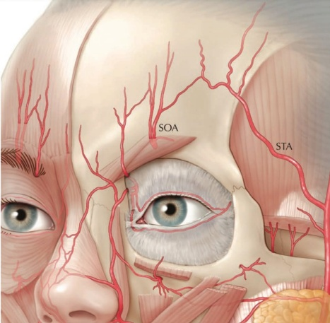
-
检查搏动，并避免触及浅表静脉。
-
在眉尾通过皮肤以 45° 角进入。将 27G 针头和 19 mm 套管针穿过皮肤，并将真皮-真皮下交界处作为目标深度。
-
针的位置应刚好位于眉毛发际线下方，并沿着较低的发际线推进至眉峰。
-
使用两个逆行注射，总计注射 0.05 mL（图 7.3）。
-
从皮肤上拔出针头。
-
对注射区域施加直接压力，以防止该血管丰富的区域出现瘀伤（图 7.4）。
-
用非惯用手指向上抬起眉毛。将拇指置于眶上缘的下边缘，以防止针头进入眼眶内。
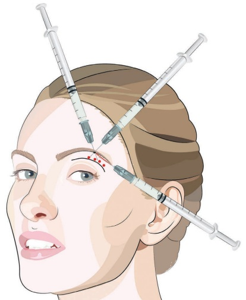
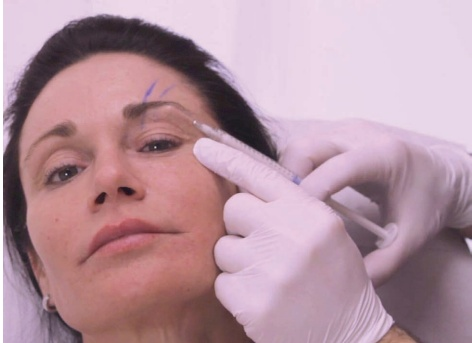
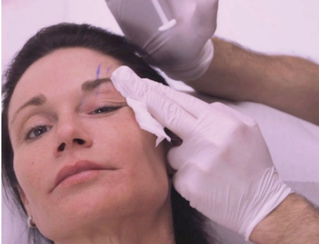
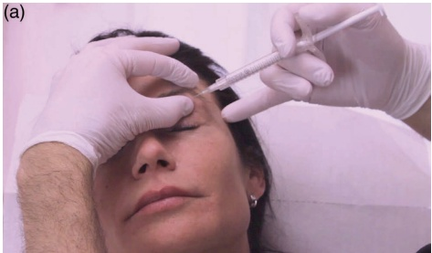
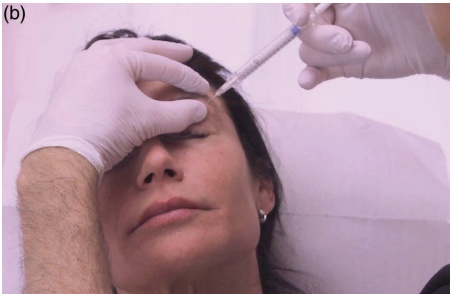
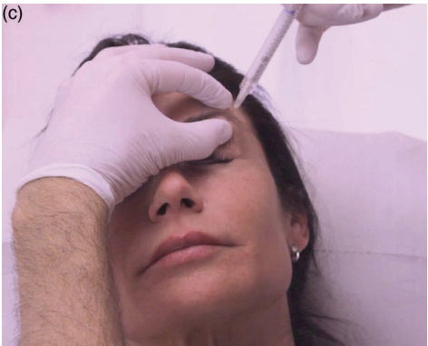
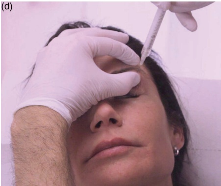
-
在发际线下方、眉峰处，将针直行至眶缘的骨膜，位于眉峰内侧。
-
不完全拔出针头，保持针尖与骨膜持续接触，以“行走”的方式沿骨膜向眉尾方向注射四个或五个体积均为 0.025 mL 的小团注（图 5.5）。
-
用非惯用手将眉毛拉起，拔出针头并均匀涂抹产品（图 5.6）。
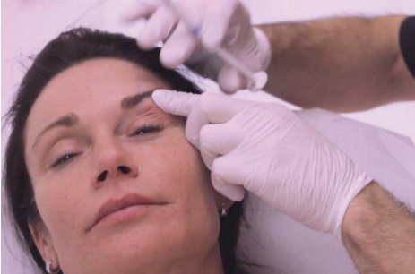
7.2 外侧眉提升（锐针多层技术 2）
注射用量，参见图 7.7。
7.2.1 步骤技术
-
对眉尾和眉峰的理想位置进行消毒和标记（图 7.8）。
-
使用全粘度（未稀释）的羟基磷灰石钙（CaHA）或最大标准稀释度的 CaHA（每 1.5 mL 注射器配 0.3 mL 利多卡因）。
-
检查搏动，并避免刺伤浅表静脉。
-
在眉尾处以 45° 角穿透皮肤。将 27–28G 针头和 19 mm 套管针穿过皮肤，并将真皮-真皮下交界处作为目标深度。
-
针的位置应刚好位于眉毛发际线下方，并沿着发际线推进至眉峰。
-
进行两次向后注射（retrogrades），总计注射 0.05 mL（图 7.9）。
-
在未完全拔出针头的情况下，用非惯用手抬起眉毛，并将针推进到骨膜处（图 7.10）。
-
将针沿眶缘的骨膜推进，并进行约四个向后线性层次的注射，总计注射 0.1 mL（图 7.11）。
-
确保在注射过程中针头始终移动。
-
用非惯用手保持抬起眉毛的状态，拔出针头并使产品均匀化。
7.3 外侧眉提升（多层套管技术）
注射用量，参见图 7.12。
7.3.1 步骤技术
- 对外侧眉尖旁进行消毒，并在需要时注射极少量麻醉剂（每 1.5 mL 注射器配 0.05 mL 利多卡因和肾上腺素）（图 7.13）。
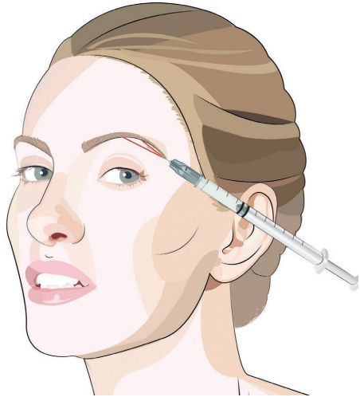
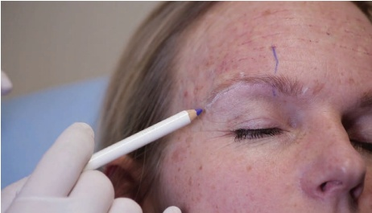
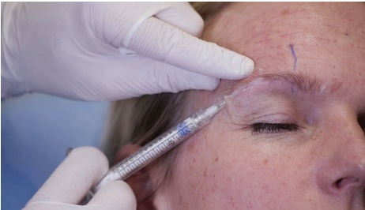
-
使用全粘度（未稀释）的羟基磷灰石钙（CaHA）或最大标准稀释度的 CaHA（每 1.5 mL 注射器配 0.3 mL 利多卡因）。
-
检查搏动，并避免刺伤浅表静脉。
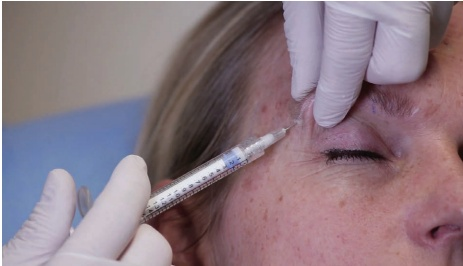
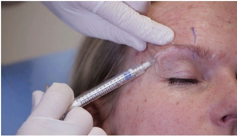
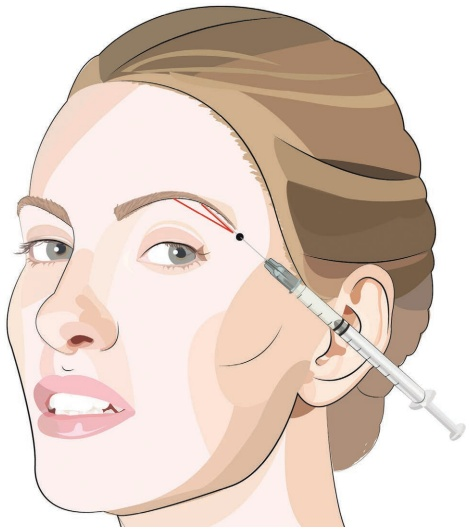
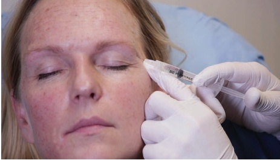
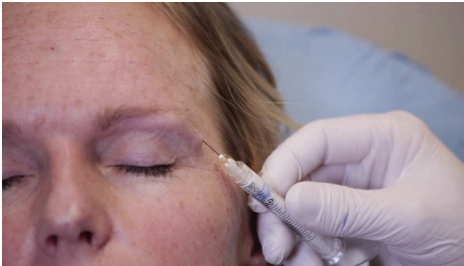
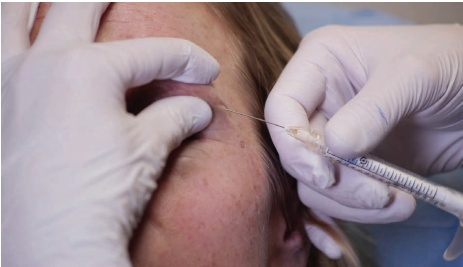
-
在眉尾处通过皮肤，以 45° 角进入。将 25G、38 mm 套管穿过皮肤，并将真皮-真皮下交界处作为目标深度。
-
套管的位置应位于眉毛下缘下方，并沿着发际线推进至眉峰。
-
使用一到两个后行注射，总计注射 0.05 mL（图 7.14）。
-
无需完全拔出套管，将眉毛抬离眶缘。将套管推进通过肌肉的阻力
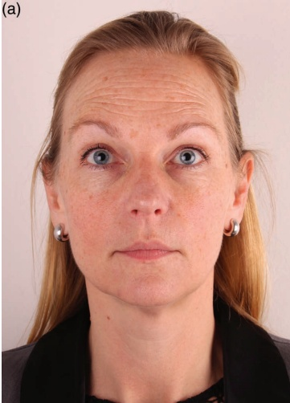
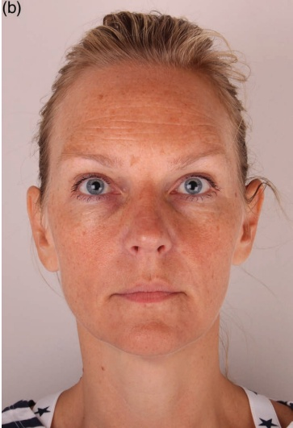
向眶缘骨膜处。通过阻力时可听到典型的“咔嗒”声。
-
在保持眉毛抬高的同时，将钝性套管针沿眶上缘推进至眶上孔外侧（图 7.15）。
-
在整个眶缘区域，朝向眉毛的侧端，缓慢注射总计约 0.1 mL 的逆行线性丝。
-
根据需要均匀涂抹。
7.3.2 术后护理
如有必要，可手动按摩该区域以使产品均匀分布。注射后可观察到水肿，通常持续一天。由于眉毛区域血管结构丰富，尤其在使用锐针注射时，可能会出现瘀血。建议注射后进行预防性加压以防止血肿形成。
7.3.3 优化效果的附加治疗
为进一步改善眉毛的美学效果，可考虑在相邻区域（太阳穴、额头）使用肉毒毒素和填充剂进行重塑。此外，也可就是否拔除眉毛提供建议。另见图 7.16。
参考文献
[1] J. A. J. van Loghem et al., “Calcium hydroxylapatite: Over a decade of clinical experience,” J Clin Aesthet Dermatol, vol. 8, no. 1, p. 38, 2015.